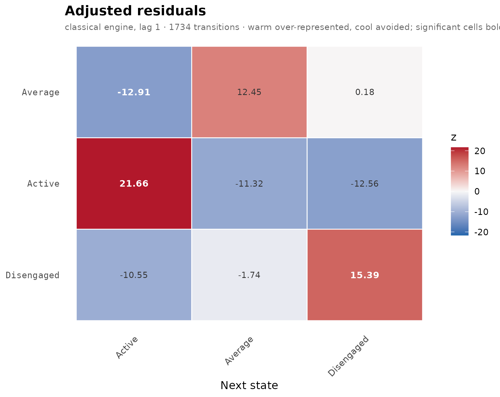
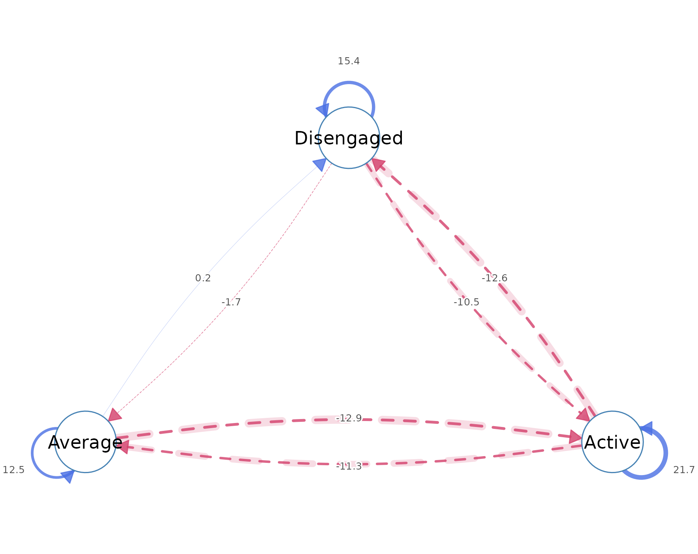
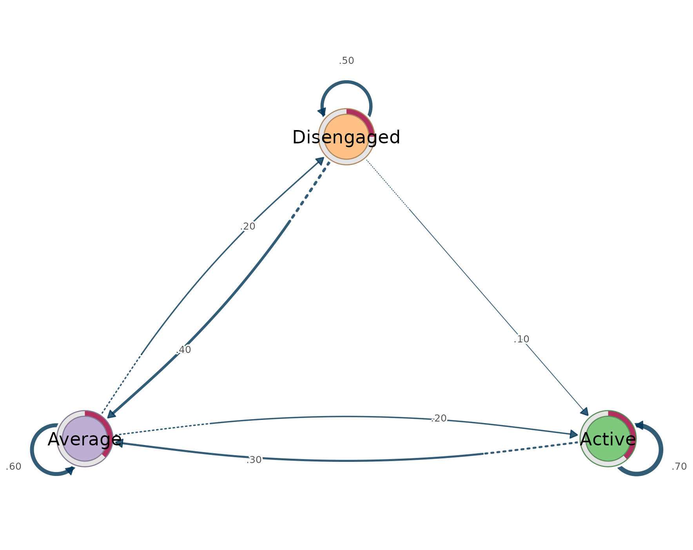
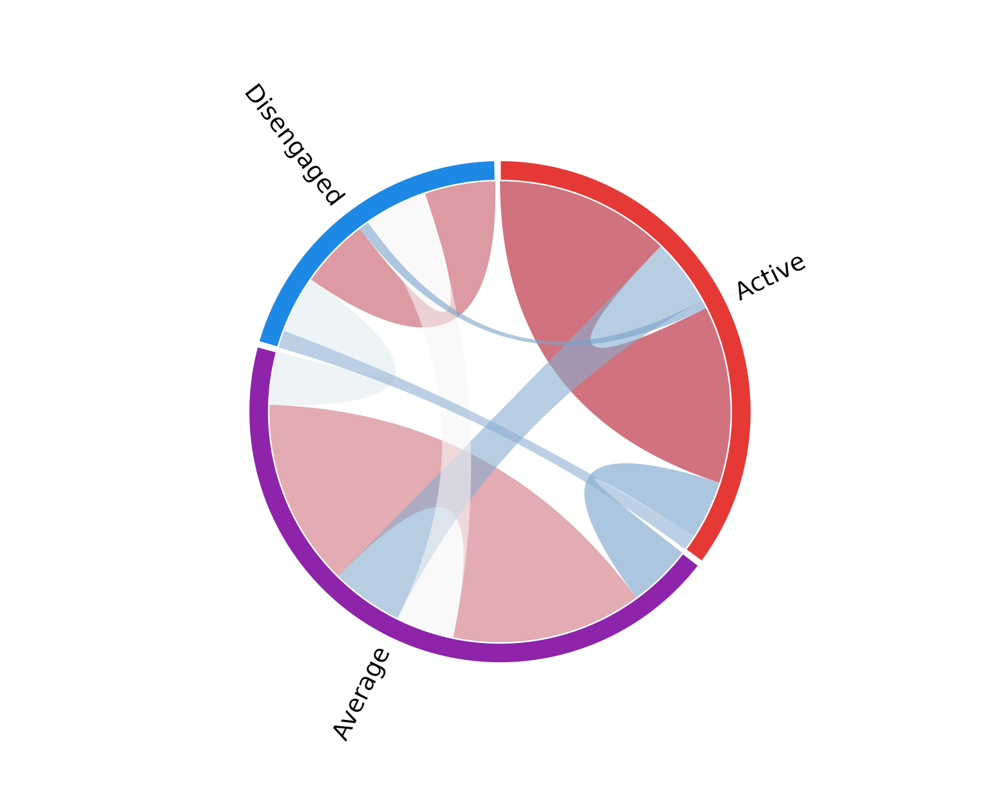
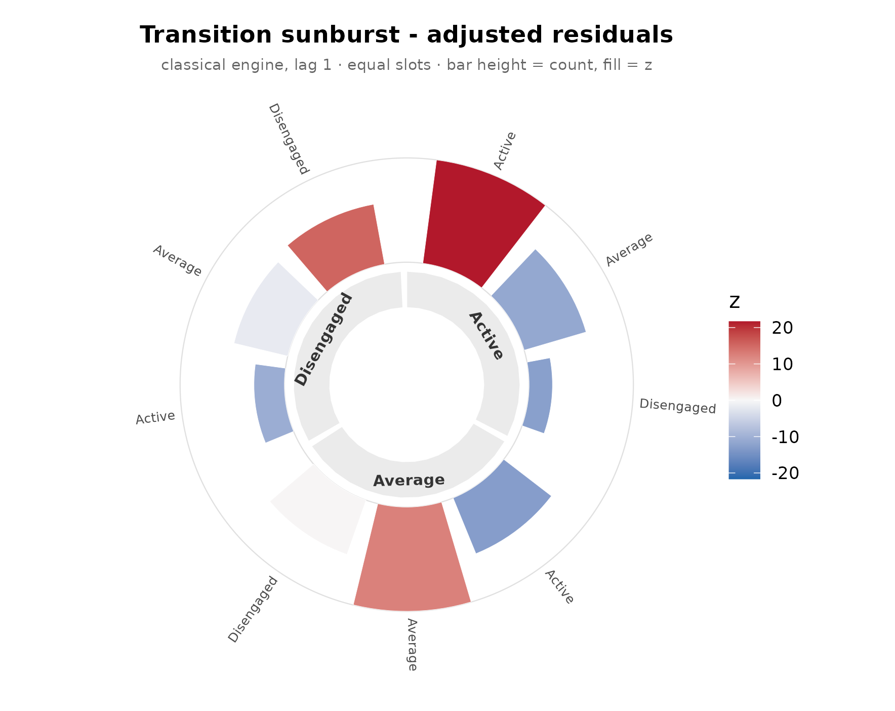
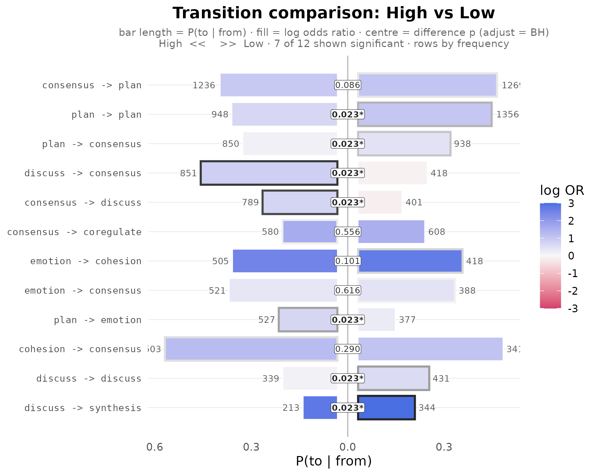
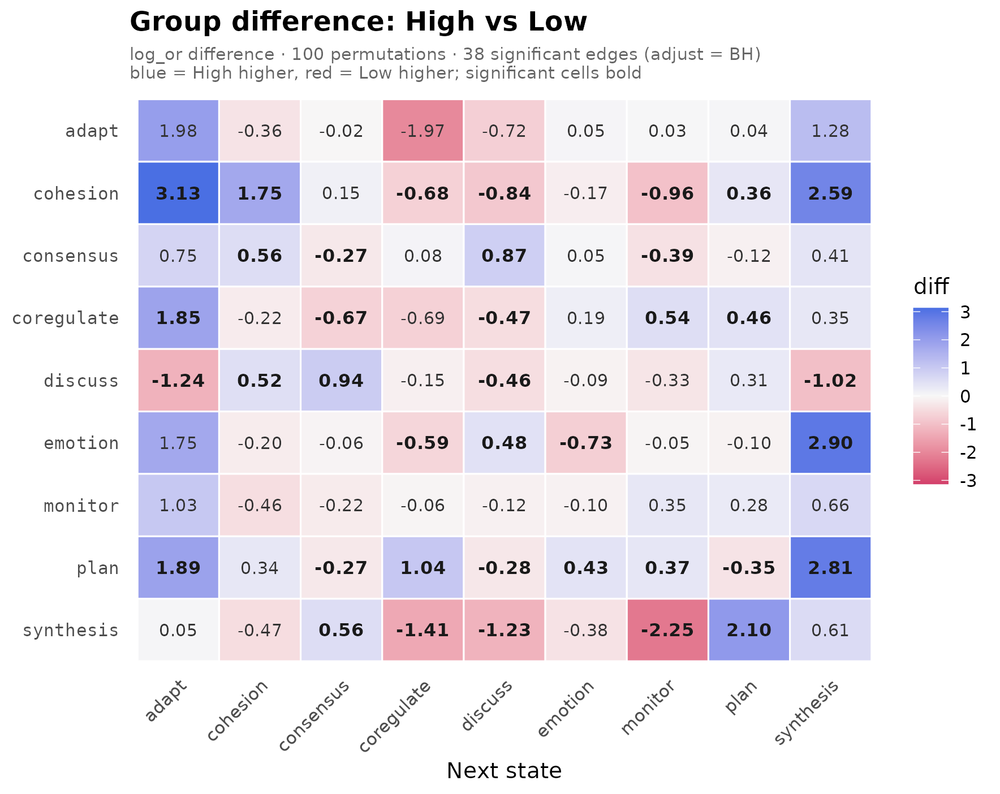
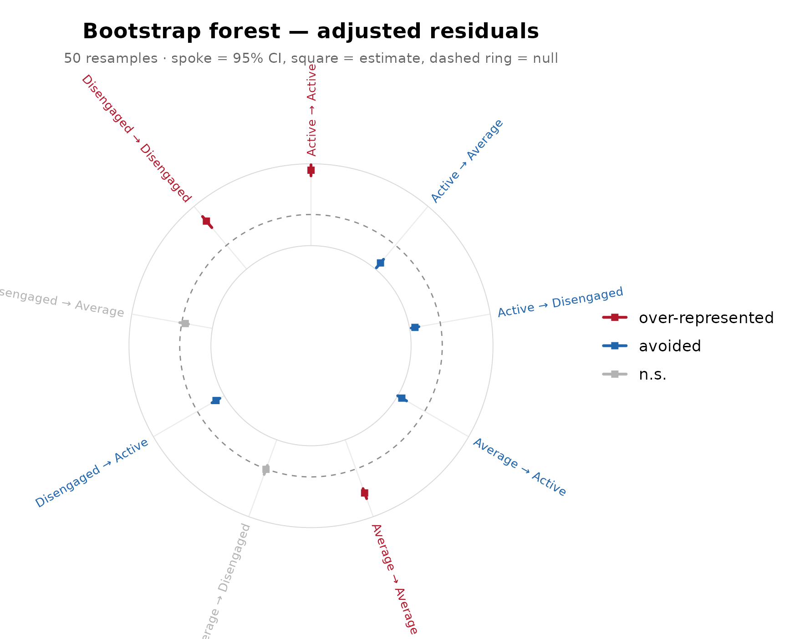

Summary
lagdynamics implements lag-sequential analysis (LSA) and
its network representation, the lag transition network, for categorical
event and sequence data. LSA is the classical inferential method for
temporal contingency in observed behaviour: it tests, for every ordered
pair of states, whether one state follows another more or less often
than independence predicts (Sackett, 1979; Bakeman & Gottman, 1997).
The package restates this method as a modern statistical workflow built
on six commitments:
-
Tidy. Every result is produced by a verb –
transitions(),nodes(),tests(),initial(),summary(),transition_probabilities(),as.data.frame()– that returns a one-row-per-observation data frame. Filters are arguments (significant = TRUE,direction = "over",min_count =), never subsetting; the user never indexes into an object. - Confirmatory, following Dynalytics. The package operationalizes the Dynalytics framework (Saqr, Lopez-Pernas, & Misiejuk, 2026), whose central tenet is a scientific contract: every analytical claim is matched by evidence appropriate to its structure, scope, and complexity. Validation is therefore expanded far beyond the classical residual test into a full battery – analytic Bayesian certainty, sequence-level bootstrap, split-half reliability, case-drop stability, and a within-sequence permutation null.
- Expanded. Beyond the classical engine the package offers five estimation engines plus an open registry for user-defined ones, multi-lag analysis with positive and negative lags, structural-zero constraints under quasi-independence, initial and transition probabilities, grouped estimation in a shared state space, and an experimental directed transfer-entropy measure.
-
Group-aware. A grouping variable yields one model
per group, and group differences are tested rather than eyeballed:
compare_lsa()permutes labels over whole sequences andbayes_compare_lsa()gives the analytic Bayesian counterpart, both with multiplicity adjustment and pairwise comparison for more than two groups. - Visual. A large array of plots covers every level of the analysis: residual heatmaps, residual networks, probability-weighted TNA transition networks, chord diagrams, polar sunbursts, uncertainty forests for the bootstrap and certainty results, and group barrels and difference heatmaps for the comparisons.
-
Interoperable. The package plugs into the other
dynamics packages on both sides:
lsa()ingests long event logs, wide data, lists of sequences,TraMineRstate sequences,tnamodels and sequence data, andNestimateprepared data, while the fitted object is acographnetwork that cograph renders directly and exposes the transition and initial probabilities that TNA-style tooling consumes.
The numerical core is a clean-room implementation. Every formula was
transcribed from its primary source – with page and equation numbers
recorded in the package’s formula reference map
(inst/REFERENCES.md) – and implemented without consulting
any prior LSA software. The implementation is cross-validated against
base-R primitives (stats::loglin() for iterative
proportional fitting, stats::chisq.test() standardized
residuals, stats::binom.test(),
stats::pchisq()) and against hand-derived algebraic
identities. The analytical core depends only on base R; the plotting
functions additionally use ggplot2 and
cograph.
The method
Let a process visit discrete states. At lag , the data reduce to a transition table whose cell counts the occasions on which state was followed, positions later, by state . Transitions are counted within a sequence only; pairs never span sequence boundaries.
The reference model is sequential independence: the next state carries no memory of the current one, so each cell is expected to occur at the rate implied by the row and column margins alone,
where and are the margins of the table and its total. The test statistic for each cell is the adjusted (standardized Pearson) residual (Haberman, 1979),
which is asymptotically standard normal under independence. A positive residual marks a transition that occurs more often than its states’ base rates predict – a sequential regularity. A negative residual marks an avoided transition. The residual, not the raw transition probability, is the evidential unit of LSA: a transition can be frequent yet unremarkable, or rare yet strongly over-represented.
When some transitions are impossible by design – self-transitions
under continuous coding are the standard case – the affected cells are
structural zeros. Expected counts then come from the quasi-independence
model, fitted by iterative proportional fitting (Wickens, 1989), and the
residuals use the design-matrix form of Christensen (1997). The two
formulations provably coincide when no structural zeros are present, and
the package pins that identity in its test suite. Structural-zero cells
are reported as non-estimable (NA), never as “expected
zero”: no test is defined there.
A lag transition network is the graph form of the fitted model: states are nodes, each ordered pair is a directed edge, and the edge weight is the tested departure from independence. This places LSA next to transition network analysis (TNA), with a precise division of labour: a TNA edge is a transition tendency (a conditional probability), whereas an LSA edge is a tested departure from a no-memory baseline. The same data can support both models; the claims differ.
What the package provides
Beyond the classical model, lagdynamics adds the
following. Each item is exercised in this vignette or in a dedicated
companion vignette.
Estimation
- Five estimation engines:
classical(Bakeman & Quera; the default),two_cell,bidirectional(Sackett’s matched-pair test on the symmetrized table),parallel_dominance, andnonparallel_dominance(Sackett, 1979; Wampold, 1984), each available throughlsa(engine = )or a direct wrapper such aslsa_two_cell(). - An open engine registry:
register_lsa_engine()/unregister_lsa_engine()accept user-defined engines, andlist_lsa_engines()enumerates what is installed. - Multi-lag analysis: any positive or negative lag in
lsa(lag = ), full lag profiles withlsa_lags(), and single-edge profiles withlag_profile(). - Structural-zero support:
loops = FALSEfor the no-self-transition model, or an arbitrary 0/1 constraint matrix viastructural_zeros, with quasi-independence expectations from the exportedlsa_ipf(). - Grouped estimation: a grouping variable yields one fit per group in a shared state space, so groups remain comparable even when a group never visits a state.
- An experimental directed transfer-entropy measure,
transfer_entropy()(Schreiber, 2000).
Inference and validation
- Analytic edge uncertainty:
certainty_lsa()derives credible intervals for transition probabilities from a Dirichlet-Multinomial posterior, without resampling. - Resampling edge uncertainty:
bootstrap_lsa()resamples whole sequences – preserving within-sequence dependence – and refits. - Whole-network reproducibility:
reliability_lsa()(repeated split-half refitting) andstability_lsa()(case-dropping). - An assumption-free null:
permute_lsa()shuffles events within sequences and recomputes the residuals. - Group comparison:
compare_lsa()permutes group labels at the sequence level, the empirically exchangeable unit;bayes_compare_lsa()is its analytic Bayesian counterpart. Both support multiplicity adjustment and, for more than two groups, pairwise comparison.
Interface
- Tidy accessors throughout:
transitions(),nodes(),tests(),initial(),transition_probabilities(),summary(), andas.data.frame()on every result object. No result requires indexing into an object. - One plotting verb with several geometries, plus dedicated plots for uncertainty and comparison results (see the gallery below).
- Ingestion of long event logs, wide sequence data, lists of sequences, and foreign sequence objects (see Interoperability).
Fitting and reading a model
The examples use the bundled engagement data: weekly
engagement states (active, average,
disengaged) for 138 students, one row per student.
fit <- lsa(engagement)
fit
#> Lag Sequential Analysis - classical (lag 1, directed)
#> 3 states | 1734 transitions | 1870 events | 136 sequences
#> states: Active, Average, Disengaged
#> independence: G² = 618.3, df = 4, p <2e-16
#>
#> Significant transitions (p < 0.05): 7 of 9
#> strongest over-represented (of 3):
#> Active -> Active z = +21.7 ***
#> Disengaged -> Disengaged z = +15.4 ***
#> Average -> Average z = +12.5 ***
#>
#> Initial states:
#> Active 0.382 ████████████████████████
#> Average 0.368 ███████████████████████
#> Disengaged 0.250 ████████████████Every fitted quantity is read through a verb that returns a tidy data
frame. transitions() gives one row per ordered pair, with
observed and expected counts, transition probability, adjusted residual,
p-value, and association measures; filters are arguments, not
subsetting.
transitions(fit)
#> from to lag count expected prob prob_col adj_res p
#> 1 Active Active 1 459 247 0.698 0.7051 21.663 4.60e-104
#> 2 Average Active 1 153 282 0.204 0.2350 -12.906 4.16e-38
#> 3 Disengaged Active 1 39 122 0.120 0.0599 -10.549 5.11e-26
#> 4 Active Average 1 176 290 0.267 0.2307 -11.319 1.06e-29
#> 5 Average Average 1 458 330 0.610 0.6003 12.453 1.35e-35
#> 6 Disengaged Average 1 129 143 0.397 0.1691 -1.736 8.25e-02
#> 7 Active Disengaged 1 23 121 0.035 0.0719 -12.557 3.64e-36
#> 8 Average Disengaged 1 140 139 0.186 0.4375 0.176 8.60e-01
#> 9 Disengaged Disengaged 1 157 60 0.483 0.4906 15.390 1.90e-53
#> yules_q kappa kappa_z kappa_p lift sign significant
#> 1 0.828 0.4438 19.19 4.68e-82 1.858 over TRUE
#> 2 -0.601 -0.4994 -14.70 6.81e-49 0.543 under TRUE
#> 3 -0.698 -0.7069 -11.46 2.03e-30 0.320 under TRUE
#> 4 -0.534 -0.4242 -12.48 9.39e-36 0.608 under TRUE
#> 5 0.553 0.2275 9.83 7.97e-23 1.386 over TRUE
#> 6 -0.108 -0.1618 -2.96 3.03e-03 0.902 under FALSE
#> 7 -0.826 -0.8272 -13.41 5.14e-41 0.189 under TRUE
#> 8 0.011 -0.0903 -1.66 9.79e-02 1.010 over FALSE
#> 9 0.754 0.3136 13.56 7.34e-42 2.618 over TRUE
transitions(fit, significant = TRUE)
#> from to lag count expected prob prob_col adj_res p
#> 1 Active Active 1 459 247 0.698 0.7051 21.7 4.60e-104
#> 2 Average Active 1 153 282 0.204 0.2350 -12.9 4.16e-38
#> 3 Disengaged Active 1 39 122 0.120 0.0599 -10.5 5.11e-26
#> 4 Active Average 1 176 290 0.267 0.2307 -11.3 1.06e-29
#> 5 Average Average 1 458 330 0.610 0.6003 12.5 1.35e-35
#> 6 Active Disengaged 1 23 121 0.035 0.0719 -12.6 3.64e-36
#> 7 Disengaged Disengaged 1 157 60 0.483 0.4906 15.4 1.90e-53
#> yules_q kappa kappa_z kappa_p lift sign significant
#> 1 0.828 0.444 19.19 4.68e-82 1.858 over TRUE
#> 2 -0.601 -0.499 -14.70 6.81e-49 0.543 under TRUE
#> 3 -0.698 -0.707 -11.46 2.03e-30 0.320 under TRUE
#> 4 -0.534 -0.424 -12.48 9.39e-36 0.608 under TRUE
#> 5 0.553 0.227 9.83 7.97e-23 1.386 over TRUE
#> 6 -0.826 -0.827 -13.41 5.14e-41 0.189 under TRUE
#> 7 0.754 0.314 13.56 7.34e-42 2.618 over TRUE
nodes(fit)
#> state outgoing incoming
#> 1 Active 658 651
#> 2 Average 751 763
#> 3 Disengaged 325 320
tests(fit)
#> test statistic df p
#> 1 lrx2 618 4 1.69e-132
#> 2 x2 629 4 7.41e-135
initial(fit)
#> state init_prob
#> 1 Active 0.382
#> 2 Average 0.368
#> 3 Disengaged 0.250
summary(fit)
#> Lag Sequential Analysis
#> =======================
#> Lag Sequential Analysis - classical (lag 1, directed)
#> 3 states | 1734 transitions | 1870 events | 136 sequences
#> states: Active, Average, Disengaged
#> independence: G² = 618.3, df = 4, p <2e-16
#>
#> Significant transitions (p < 0.05): 7 of 9
#> strongest over-represented (of 3):
#> Active -> Active z = +21.7 ***
#> Disengaged -> Disengaged z = +15.4 ***
#> Average -> Average z = +12.5 ***
#>
#> Initial states:
#> Active 0.382 ████████████████████████
#> Average 0.368 ███████████████████████
#> Disengaged 0.250 ████████████████
#>
#> Node activity (share of transitions):
#> Active out 0.379 ██████████ in 0.375 ██████████
#> Average out 0.433 ████████████ in 0.440 ████████████
#> Disengaged out 0.187 █████ in 0.185 █████
#>
#> Observed counts (obs):
#> Active Average Disengaged
#> Active 459 176 23
#> Average 153 458 140
#> Disengaged 39 129 157
#>
#> Expected counts (exp):
#> Active Average Disengaged
#> Active 247 290 121
#> Average 282 330 139
#> Disengaged 122 143 60
#>
#> Transitional probabilities (prob):
#> Active Average Disengaged
#> Active 0.698 0.267 0.035
#> Average 0.204 0.610 0.186
#> Disengaged 0.120 0.397 0.483
#>
#> Adjusted residuals (adj_res):
#> Active Average Disengaged
#> Active 21.7 -11.32 -12.557
#> Average -12.9 12.45 0.176
#> Disengaged -10.5 -1.74 15.390The lag is a first-class argument. A lag profile traces one edge
across temporal distances; lsa_lags() fits the full
multi-lag model.
lag_profile(engagement, "Active", "Disengaged", lags = 1:3)
#> lag from to count prob adj_res p significant
#> 1 1 Active Disengaged 23 0.0350 -12.56 3.64e-36 TRUE
#> 2 2 Active Disengaged 33 0.0536 -10.65 1.77e-26 TRUE
#> 3 3 Active Disengaged 35 0.0615 -9.42 4.68e-21 TRUE
as.data.frame(lsa_lags(engagement, lags = 1:2)) |> head(6)
#> from to lag count expected prob prob_col adj_res p
#> 1 Active Active 1 459 247 0.698 0.7051 21.66 4.60e-104
#> 2 Average Active 1 153 282 0.204 0.2350 -12.91 4.16e-38
#> 3 Disengaged Active 1 39 122 0.120 0.0599 -10.55 5.11e-26
#> 4 Active Average 1 176 290 0.267 0.2307 -11.32 1.06e-29
#> 5 Average Average 1 458 330 0.610 0.6003 12.45 1.35e-35
#> 6 Disengaged Average 1 129 143 0.397 0.1691 -1.74 8.25e-02
#> yules_q kappa kappa_z kappa_p lift sign significant
#> 1 0.828 0.444 19.19 4.68e-82 1.858 over TRUE
#> 2 -0.601 -0.499 -14.70 6.81e-49 0.543 under TRUE
#> 3 -0.698 -0.707 -11.46 2.03e-30 0.320 under TRUE
#> 4 -0.534 -0.424 -12.48 9.39e-36 0.608 under TRUE
#> 5 0.553 0.227 9.83 7.97e-23 1.386 over TRUE
#> 6 -0.108 -0.162 -2.96 3.03e-03 0.902 under FALSEStructural zeros restate the model rather than filter its output: forbidden cells are non-estimable.
fz <- lsa(engagement, loops = FALSE)
transitions(fz) |> subset(from == to)
#> from to lag count expected prob prob_col adj_res p yules_q
#> 1 Active Active 1 459 0 0.698 0.705 NA NA 0.828
#> 5 Average Average 1 458 0 0.610 0.600 NA NA 0.553
#> 9 Disengaged Disengaged 1 157 0 0.483 0.491 NA NA 0.754
#> kappa kappa_z kappa_p lift sign significant
#> 1 0.444 19.19 4.68e-82 NA over FALSE
#> 5 0.227 9.83 7.97e-23 NA over FALSE
#> 9 0.314 13.56 7.34e-42 NA over FALSEAlternative engines and the open registry:
list_lsa_engines()
#> name
#> 1 bidirectional
#> 2 classical
#> 3 nonparallel_dominance
#> 4 parallel_dominance
#> 5 two_cell
#> description requires
#> 1 Sackett's bidirectional / matched-pair test on the symmetrized table
#> 2 Bakeman & Quera classical lag sequential analysis
#> 3 Sackett's non-parallel-dominance (observed-SE + binomial) test
#> 4 Sackett's parallel-dominance (expected-SE) test
#> 5 2x2 cell test (odds ratio, log-OR Wald z, Yule's Q)
lsa_two_cell(engagement)
#> Lag Sequential Analysis - two_cell (lag 1, directed)
#> 3 states | 1734 transitions | 1870 events | 136 sequences
#> states: Active, Average, Disengaged
#>
#> Significant transitions (p < 0.05): 7 of 9
#> strongest over-represented (of 3):
#> Active -> Active z = +20.3 ***
#> Disengaged -> Disengaged z = +14.2 ***
#> Average -> Average z = +12.2 ***
#>
#> Initial states:
#> Active 0.382 ████████████████████████
#> Average 0.368 ███████████████████████
#> Disengaged 0.250 ████████████████Visualisation
One verb, plot(fit, type = ), renders the model;
dedicated methods cover the inference objects. Every view of a fit
displays the adjusted residual (or, on request, another fitted matrix)
and differs only in geometry.
| view | call | shows |
|---|---|---|
| residual heatmap | plot(fit) |
the fitted residual matrix |
| residual network | plot(fit, type = "network") |
tested departures as directed edges |
| transition (TNA) network | plot(fit, type = "network", weights = "tna") |
conditional transition probabilities |
| chord diagram | plot(fit, type = "chord") |
transition flow between states |
| polar sunburst | plot(fit, type = "sunburst") |
outgoing distribution per state |
| uncertainty forest |
plot(bootstrap_lsa(fit)),
plot(certainty_lsa(fit))
|
edge-level intervals |
| group barrel | plot(compare_lsa(g)) |
per-group edge estimates with test results |
| difference heatmap | plot(compare_lsa(g), style = "heatmap") |
signed group differences |
Two colour conventions are used, by purpose. The heatmap, chord, and
sunburst use a diverging residual scale (warm = over-represented, cool =
avoided). The network and comparison plots follow the TNA convention –
blue = more than chance, red = less, avoided edges dashed – so an
lsa network reads like any other transition network.
plot(fit)
plot(fit, type = "network")
plot(fit, type = "network", weights = "tna")
plot(fit, type = "chord")
plot(fit, type = "sunburst")
The full gallery, including the which = matrix selector
and the grouped-plot variants, is in
vignette("plotting", package = "lagdynamics").
Group comparison
A grouping variable produces one fit per group in a shared state
space. Here the long-format group_regulation_long event log
is split by achievement level, using the actor /
action / time grammar.
gfit <- lsa(group_regulation_long, actor = "Actor", action = "Action",
time = "Time", group = "Achiever")
gfit
#> <lsa_group>
#> engine: classical
#> states: 9 (adapt, cohesion, consensus, coregulate, discuss, emotion, monitor, plan, synthesis)
#> groups: 2
#> - High: 1000 sequences
#> - Low: 1000 sequences
transitions(gfit, significant = TRUE) |> head(4)
#> group from to lag count expected prob prob_col adj_res p
#> 1 High consensus adapt 1 14 38.1 0.00413 0.0979 -4.59 4.45e-06
#> 2 High coregulate adapt 1 20 10.0 0.02237 0.1399 3.27 1.06e-03
#> 3 High discuss adapt 1 48 22.5 0.02396 0.3357 5.88 4.00e-09
#> 4 High emotion adapt 1 5 17.4 0.00323 0.0350 -3.19 1.40e-03
#> yules_q kappa kappa_z kappa_p lift sign significant
#> 1 -0.544 -0.6606 -4.98 6.36e-07 0.367 under TRUE
#> 2 0.371 0.0636 2.90 3.68e-03 1.990 over TRUE
#> 3 0.466 0.1803 5.21 1.86e-07 2.132 over TRUE
#> 4 -0.589 -0.7375 -3.46 5.48e-04 0.287 under TRUE
summary(gfit)
#> group engine lag n_states n_sequences n_events n_transitions n_significant
#> 1 High classical 1 9 1000 13721 12721 66
#> 2 Low classical 1 9 1000 13812 12812 67
#> alpha lrx2 lrx2_df lrx2_p x2 x2_df x2_p
#> 1 0.05 6147 64 0 6807 64 0
#> 2 0.05 7715 64 0 9197 64 0compare_lsa() tests whether the groups differ, edge by
edge, by permuting group labels over whole sequences – the unit that is
actually exchangeable under the null – with optional multiplicity
adjustment. bayes_compare_lsa() reaches the same question
analytically, reporting the credible range of each group difference in
transition probability. With more than two groups, both return pairwise
results.
cmp <- compare_lsa(gfit, R = 100, adjust = "BH")
cmp
#> <lsa_comparison>
#> groups: High vs Low
#> measure: log_or difference (High - Low)
#> R: 100 label permutations
#> edges: 38 significant of 78 tested (adjust = BH)
#> omnibus: statistic = 79.48, p = 0.009901
as.data.frame(cmp) |> head(4)
#> from to log_or_a log_or_b diff p_perm p_adj significant
#> 1 adapt adapt -1.183 -3.17 1.984 NA NA FALSE
#> 2 cohesion adapt -0.794 -3.92 3.127 0.0099 0.0234 TRUE
#> 3 consensus adapt -1.219 -1.97 0.748 0.0693 0.1126 FALSE
#> 4 coregulate adapt 0.778 -1.08 1.855 0.0099 0.0234 TRUE
bcmp <- bayes_compare_lsa(gfit, draws = 1000, adjust = "BH", seed = 1)
bcmp
#> <lsa_bayes> (Bayesian Dirichlet-Multinomial comparison)
#> groups: High vs Low
#> prior: Dirichlet(0.50) | draws: 1000 | CI: 95%
#> edges: 39 credibly different of 81 compared
as.data.frame(bcmp) |> head(4)
#> from to prob_a prob_b diff ci_low ci_high pd
#> 1 adapt adapt 0.00344 0.001342 0.00209 -0.005313 0.01663 0.650
#> 2 cohesion adapt 0.00584 0.000657 0.00518 0.001209 0.01097 0.989
#> 3 consensus adapt 0.00427 0.005609 -0.00134 -0.004714 0.00214 0.777
#> 4 coregulate adapt 0.02282 0.011569 0.01125 0.000315 0.02310 0.977
#> effect_size p_value p_adj significant
#> 1 0.39 0.700 0.8239 FALSE
#> 2 2.06 0.022 0.0435 FALSE
#> 3 -0.75 0.446 0.6123 FALSE
#> 4 1.91 0.046 0.0867 FALSE
plot(cmp)
plot(cmp, style = "heatmap")
Confirmatory battery
The adjusted residual tests each edge against independence, but that test rests on large-sample assumptions that sequential data can violate, and stronger claims – about precision, robustness, or the network as a whole – need their own evidence. The battery pairs each kind of claim with a matching procedure:
| claim | evidence | verb |
|---|---|---|
| a specific transition is real; how precise | edge-level uncertainty |
certainty_lsa(), bootstrap_lsa()
|
| a significant transition is not fragile | robustness to case loss | stability_lsa() |
| the whole network is reproducible | split-half reliability | reliability_lsa() |
| the structure exceeds chance | assumption-free empirical null | permute_lsa() |
| two groups differ | inference under exchangeability |
compare_lsa(), bayes_compare_lsa()
|
cert <- certainty_lsa(fit)
as.data.frame(cert) |> head(3)
#> from to observed prob_observed prob_mean prob_se prob_ci_low
#> 1 Active Active 459 0.698 0.697 0.0179 0.6611
#> 2 Average Active 153 0.204 0.204 0.0147 0.1760
#> 3 Disengaged Active 39 0.120 0.121 0.0180 0.0879
#> prob_ci_high p_value stable adj_res_observed adj_res_stable
#> 1 0.731 5.56e-20 TRUE 21.7 TRUE
#> 2 0.233 6.06e-04 TRUE -12.9 TRUE
#> 3 0.158 9.45e-02 FALSE -10.5 FALSE
boot <- bootstrap_lsa(fit, R = 50)
as.data.frame(boot) |> head(3)
#> from to observed count_mean count_se count_ci_low count_ci_high
#> 1 Active Active 459 467.5 60.53 360 559
#> 2 Average Active 153 156.5 14.79 131 178
#> 3 Disengaged Active 39 38.7 5.46 28 49
#> adj_res_observed adj_res_mean adj_res_se adj_res_ci_low adj_res_ci_high
#> 1 21.7 21.5 1.56 18.9 24.33
#> 2 -12.9 -12.8 1.44 -15.2 -10.20
#> 3 -10.5 -10.6 1.26 -12.7 -8.29
#> adj_res_p_boot adj_res_stable prob_observed prob_mean prob_ci_low
#> 1 0 TRUE 0.698 0.696 0.6318
#> 2 0 TRUE 0.204 0.209 0.1729
#> 3 0 TRUE 0.120 0.121 0.0838
#> prob_ci_high yules_q_observed yules_q_mean yules_q_ci_low yules_q_ci_high
#> 1 0.745 0.828 0.821 0.769 0.874
#> 2 0.250 -0.601 -0.593 -0.685 -0.493
#> 3 0.156 -0.698 -0.698 -0.802 -0.584
rel <- reliability_lsa(fit, R = 20)
rel
#> <lsa_reliability>
#> engine: classical
#> replicates: 20
#> weights: prob
#> method: pearson
#> n sequences: 136
#> split-half r: 0.972 (sd = 0.025)
#> 95% CI: [0.921, 0.996]
stab <- stability_lsa(fit, R = 30)
stab
#> <lsa_stability>
#> engine: classical
#> replicates: 30
#> proportion: 80%
#> min stable: 95%
#> stable edges: 7 of 9 (>= 95% across replicates)
pm <- permute_lsa(fit, R = 100)
pm
#> <lsa_permutation>
#> engine: classical
#> replicates: 100
#> within seq: TRUE
#> significant edges (p_perm < 0.050): 7 of 9
plot(boot)
Bootstrap replication is reproducible across languages and sessions:
bootstrap_lsa(indices = ) accepts a precomputed resampling
matrix for bit-identical replay. The full treatment of the battery is in
vignette("confirmatory", package = "lagdynamics").
Interoperability
lagdynamics is designed to sit inside an existing
analysis stack rather than replace it, on both the input and the output
side.
Input. lsa() accepts, through one front
door:
- wide data frames and matrices (rows = sequences, columns = ordered
positions), as in the bundled
engagementandgroup_regulation; - lists of categorical vectors, one element per sequence;
- long event logs via the
actor/action/timegrammar, including Unix and custom time formats, as ingroup_regulation_longandai_long; - foreign sequence objects, duck-typed so that none of their packages
becomes a runtime dependency:
TraMineRstate sequences (stslist),tnamodels and their grouped and sequence-data forms (tna,group_tna,tna_seq_data,tna_data), andNestimateprepared data (nestimate_data).
fit_log <- lsa(group_regulation_long, actor = "Actor",
action = "Action", time = "Time")
fit_log
#> Lag Sequential Analysis - classical (lag 1, directed)
#> 9 states | 25533 transitions | 27533 events | 2000 sequences
#> states: adapt, cohesion, consensus, coregulate, discuss, emotion, monitor, plan, synthesis
#> independence: G² = 13203.8, df = 64, p <2e-16
#>
#> Significant transitions (p < 0.05): 72 of 81
#> strongest over-represented (of 23):
#> emotion -> cohesion z = +58.2 ***
#> discuss -> synthesis z = +48.0 ***
#> synthesis -> adapt z = +38.8 ***
#> consensus -> coregulate z = +35.3 ***
#> consensus -> plan z = +32.6 ***
#> ... and 18 more
#>
#> Initial states:
#> consensus 0.214 ████████████████████████
#> plan 0.204 ███████████████████████
#> discuss 0.175 ████████████████████
#> emotion 0.151 █████████████████
#> monitor 0.144 ████████████████
#> cohesion 0.060 ███████
#> synthesis 0.019 ██
#> coregulate 0.019 ██
#> adapt 0.011 █Output. The fitted object carries its network
identity with it: it inherits the cograph_network class, so
cograph’s rendering verbs accept it directly, and the
plotting gallery above draws its network, chord, and comparison views
through that seam. The fitted probabilities are exposed for any
downstream transition-network tooling –
transition_probabilities() returns the row-stochastic
matrix
and initial() the initial-state distribution, the two
ingredients a TNA-style model requires – and every result object
flattens to a plain data frame with as.data.frame(), so
results move into any tabular pipeline without package-specific
code.
transition_probabilities(fit)
#> Active Average Disengaged
#> Active 0.698 0.267 0.035
#> Average 0.204 0.610 0.186
#> Disengaged 0.120 0.397 0.483
initial(fit)
#> state init_prob
#> 1 Active 0.382
#> 2 Average 0.368
#> 3 Disengaged 0.250Bundled data
Four data sets ship with the package, spanning the supported input
shapes: engagement (wide; 138 students, weekly engagement
states), group_regulation (wide; 2,000
collaborative-learning sessions), group_regulation_long
(long event log with actor, action, time, and an achievement group), and
ai_long (long event log of coded AI actions in human–AI
coding sessions).
References
Bakeman, R., & Gottman, J. M. (1997). Observing interaction: An introduction to sequential analysis (2nd ed.). Cambridge University Press.
Bakeman, R., & Quera, V. (1995). Analyzing interaction: Sequential analysis with SDIS and GSEQ. Cambridge University Press.
Christensen, R. (1997). Log-linear models and logistic regression (2nd ed.). Springer.
Haberman, S. J. (1979). Analysis of qualitative data: Volume 2, New developments. Academic Press.
Sackett, G. P. (1979). The lag sequential analysis of contingency and cyclicity in behavioral interaction research. In J. D. Osofsky (Ed.), Handbook of infant development (pp. 623–649). Wiley.
Saqr, M., Lopez-Pernas, S., & Misiejuk, K. (2026). Dynalytics: A framework for the analysis of temporal processes.
Schreiber, T. (2000). Measuring information transfer. Physical Review Letters, 85(2), 461–464. doi:10.1103/PhysRevLett.85.461.
Wampold, B. E. (1984). Tests of dominance in sequential categorical data. Psychological Bulletin, 96(2), 424–429.
Wickens, T. D. (1989). Multiway contingency tables analysis for the social sciences. Erlbaum.
Full documentation and reference: https://pak.dynasite.org/lagdynamics/
Part of the Dynalytics framework.